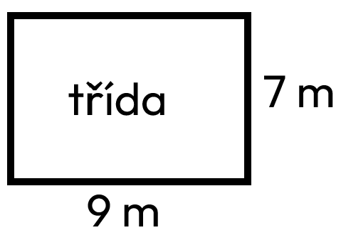

Měřítko
*myslím tímto měřítko mapy
Informace
- zobrazení o kolik je skutečnost zmenšena
- 1:50000 - 1 cm na mapě se rovná 50 000cm (0,5 km) ve skutečnosti (turistická mapa)
- převod mezi cm je o 5 míst doleva (200 000 cm = 2km)
- měřítko je poměr
Plán třídy

*představte si, že strana dlouhá 9m je narýsovaná 9cm a strana 7m je narýsovaná 7cm, protože 1cm na mapě = 1m ve skutečnosti
Měřítko: 1:100 (1cm na mapě = 1m ve skutečnosti)
Hotovo
Typy otázek
Vypočítat skutečnou vzdálenost
měřítko .... 1:250000
vzdálenost na mapě .... 8cm
vzdálenost ve skutečnosti .... x
250 000 × 8 = 2 000 000
2 000 000 cm = 20km
Skutečná vzdálenost je 20km.
Vypočítat vzdálenost na mapě
měřítko .... 1:200000
vzdálenost ve skutečnosti .... 10km
vzdálenost na mapě .... y
převod 200 000cm na km (2km)
y = 10 ÷ 2 = 5
y = 5
Vzdálenost na mapě je 5 km.
Vypočítat meřítko
skutečná vzdálenost .... 4km
vudálenost na mapě 8cm
měřítko .... z
převod vudálenosti ve skutečnosti na cm (4km = 400 000cm)
z = 8:400000 = 1:50000
z = 1:50000
Měřítko je 1:50000.